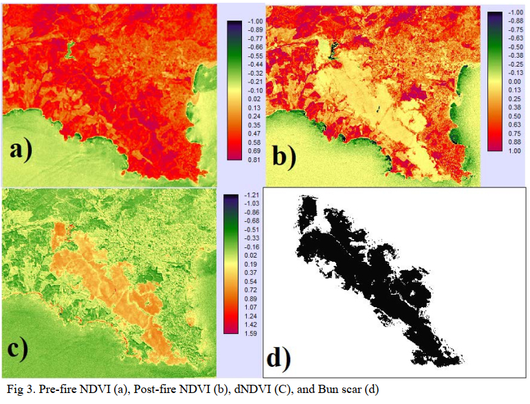
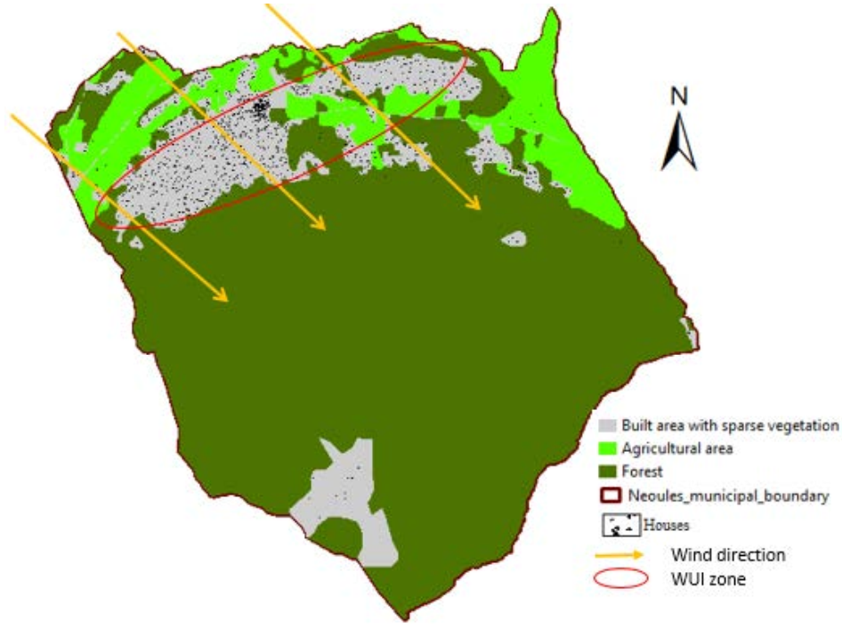
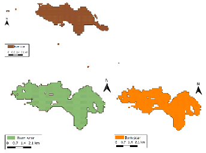
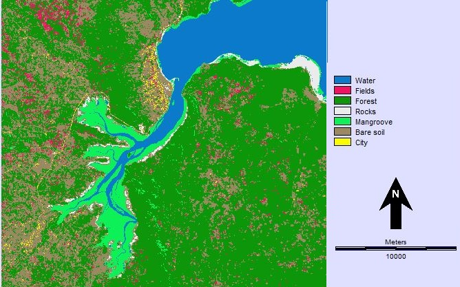
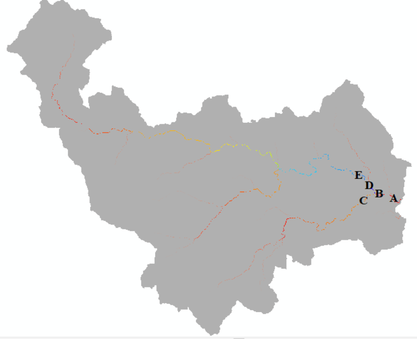
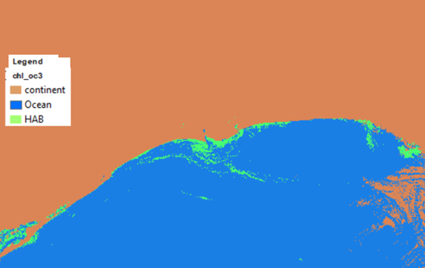
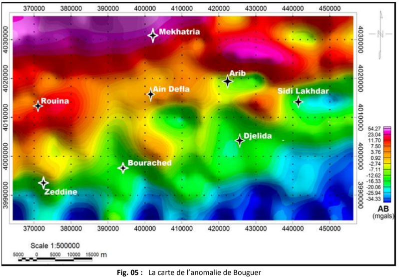
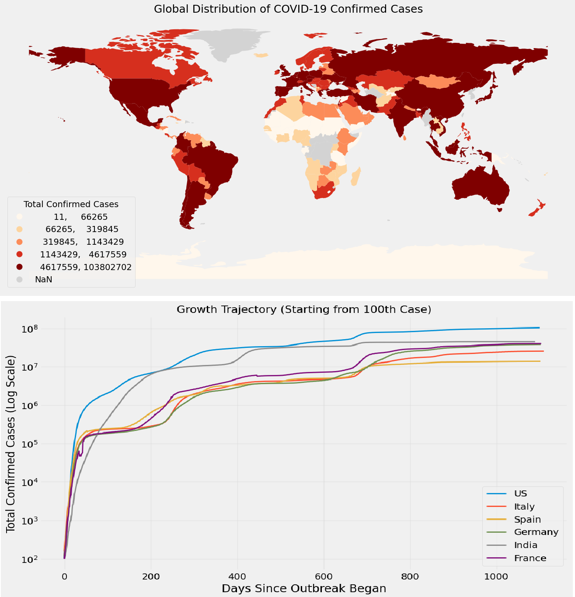

About me
Muhibu Kaneka
I am an Environmental Geoscientist and spatial analyst with four years of experience in forest fire mapping, satellite image processing, and environmental risk assessment. Proven ability to develop automated workflows for satellite-based risk mapping and analysis, conduct field data validation, and apply statistical and spatial methods to natural hazards. Research interests focus on fire severity assessment, flood risk analysis, land use and land cover change, and broader topics related to climate change and natural hazards.
Skills
Geospatial Analysis tools
Web mapping tools
Data Analysis tools
Soft skills
Education
University of Tlemcen
BSc. Geoscience
2012 - 2015
Tlemcen, Algeria
University of Tlemcen
MSc. Georesources
2016 - 2018
Tlemcen, Algeria
University of Côte d'Azur
MSc. Environmental Hazards and Risks Management
2019 - 2021
Nice, France
M2i Training center
Certificate in Data Analytics
Jun, 2025 - Sept, 2025
Rouen,France
Work Experience
• Designed and administered spatial and non-spatial databases (PostgreSQL/PostGIS), ensuring data integrity and consistency.
• Extracted, cleaned, transformed, and loaded data from multiple sources (IGN, DFCI, CRIGE, BDIFF) into internal spatial databases.
• Built and maintained a Web GIS application to visualize spatial data and support stakeholder decision-making.
• Collaborated closely with multidisciplinary teams, defined data needs, delivering GIS outputs, and support project objectives.
• Prepared technical reports, GIS documentation, and user manuals for project teams and partners.
• Improved a python-based workflows which automate satellite image processing, spatial analysis, and fire-mapping outputs.
• Developed customized workflows and automated processes to improve efficiency in data processing and visualization.
• Performed manual analysis of satellite images using GIS and remote sensing techniques, mirroring the automated workflow to test and validate its accuracy.
• Created an automation script for raster-to-vector format conversion and integrated the results into a spatial database.
• Conducted ground truthing for the verification of the efficiency of the automation tool
• Processed satellite imagery to generate land cover and land-use maps
• Conducted spatial and statistical analyses to assess the impact of suburban development on runoff dynamics.
• Developed hydrological models incorporating runoff coefficients, precipitation, and infiltration parameters.
• Produced maps, analytical reports, and visual outputs to support environmental risk assessment.
• Conducted satellite gravity data acquisition, processing, and interpretation for structural analysis.
• Performed structural mapping (faults, folds, lineaments) using GIS and remote sensing techniques.
• Produced maps of structural mapping of faults, folds, and lineament identification and analysis.
• Produced maps of anomalous behavior, including Bouguer gravity anomalies.
Portfolio

This study aims to develop mitigation strategies to address the impacts of post-fire conditions. The analysis is based on the wildfire event that occurred in the municipality of La Londe-les-Maures (Southern France), where 1,423 ha of forest were burned on 25 July 2017. Pre-fire and post-fire satellite imagery were acquired to assess changes in hydrological behavior, and infiltration and runoff were calculated for both conditions. The results indicate a substantial decrease in infiltration capacity, with forested areas declining from 72 mm under pre-fire conditions to 21.6 mm post-fire, and shrubland decreasing from 56 mm to 16.8 mm. Additionally, runoff at selected critical locations increased, with an average increase of 0.8 m³.

This study assesses wildfire vulnerability in a municipality located in the Var Department (southeastern France), by analyzing factors influencing fire ignition and propagation, including vegetation density, land-use patterns, proximity of buildings and infrastructure to forested areas, and topographical conditions. The assessment follows wildfire prevention regulations established by the French government in 2002 and adopted at the municipal level. These regulations require brush clearing within 100 m of residential buildings located less than 200 m from forests, as well as along communal roads (20 m), departmental roads (10 m), and power line corridors (10 m).

This study investigates multi-date and mixed approaches—combining multi-temporal satellite imagery and multiple spectral indices to reduce false detections in burn scar mapping using the EMR5 tool. Conventional burn scar mapping within EMR5 relies on pixel-based analysis, which is prone to misclassification due to spectral confusion and temporal variability. The primary objective of the tool is to generate accurate burn scar maps and fire boundaries that are subsequently integrated into the CES-Incendie database for dissemination through its operational platform. The results demonstrate that the mixed approach, followed by the multi-date approach using dNDVI feature layers, significantly improves mapping accuracy. In the case studies of Nébian and Peypin, false detections were reduced by more than 90%. Despite these improvements, challenges remain due to the inherent limitations of pixel-based methods, highlighting the need for further methodological enhancements to improve burn scar delineation.

This study investigates land cover changes, with particular emphasis on the loss of mangrove and forest areas, in the Lindi region of southeastern Tanzania between 2008 and 2018. Landsat satellite imagery from 2008 (Landsat 5) and 2018 (Landsat 8) was used to generate land cover maps for both periods. The analysis employed unsupervised K-means classification followed by post-classification corrections. Key methodological steps included image preprocessing, contrast stretching, color compositing, and classification refinement to improve discrimination among stacked land cover classes.

This study examines the impact of suburban development on surface runoff in the Brague catchment, southeastern France, over the period 1990–2012. Land cover changes were analyzed using CORINE Land Cover data, which were reclassified into four major categories: built areas, agricultural land, forest, and thin soil. Remote sensing, GIS techniques, and air photo interpretation were employed to assess changes in surface imperviousness. Hydrological parameters, including runoff coefficients, precipitation, and infiltration, were derived and integrated into a runoff estimation model using TerrSet software.

This project investigates the use of Sentinel-2 satellite imagery for monitoring harmful algal blooms (HABs) in the Guadiana River basin along the Spain–Portugal border. By applying different chlorophyll-a retrieval algorithms, the study evaluates the spatial extent and intensity of HABs in a cost-effective and time-efficient manner, highlighting the potential of remote sensing as a complementary tool to traditional in situ monitoring methods.

This study utilizes satellite-derived gravity data obtained from the TOPEX/POSEIDON (T/P) mission to investigate the subsurface structure of the Ain-Defla region. Various processing and modeling techniques were applied, including the generation of gravimetric maps and the estimation of the depth and orientation of major geological units. The resulting gravimetric maps reveal the presence of both positive and negative gravity anomalies, indicating heterogeneous density distribution within the subsurface. The spatial variability and orientations of these anomalies suggest a complex geological framework, likely associated with structural features such as faults and dykes

This project examines how COVID-19 outbreak dynamics vary across countries and how these patterns relate to public health interventions. Using Johns Hopkins CSSE global time-series data, cumulative national counts were aggregated and converted into daily incidence to analyze growth rates and epidemic peaks. Trends were smoothed with a 7-day moving average and visualized on both linear and log scales. Cross-country comparisons were performed using (i) timelines starting from the first reported deaths and (ii) trajectories aligned at a common threshold (e.g., ≥100 deaths) to reduce bias from differing outbreak start dates. Results reveal clear differences in acceleration and peak magnitude and suggest that earlier strict containment is associated with flatter curves, although causal interpretation is limited by reporting and data quality issues.